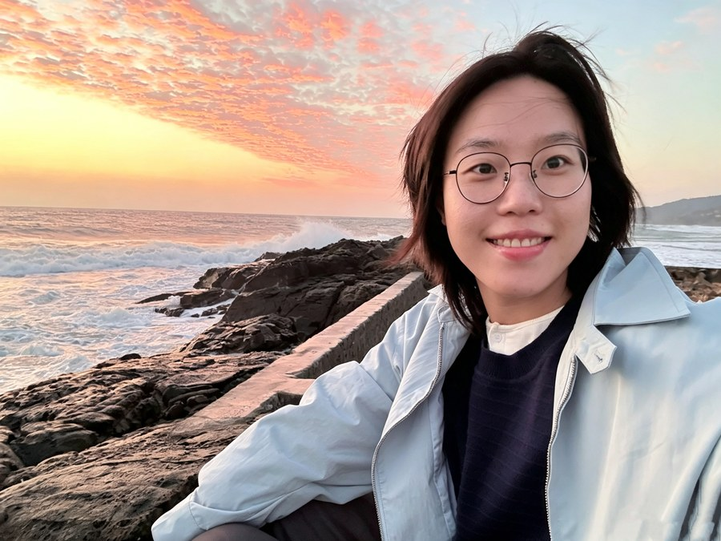
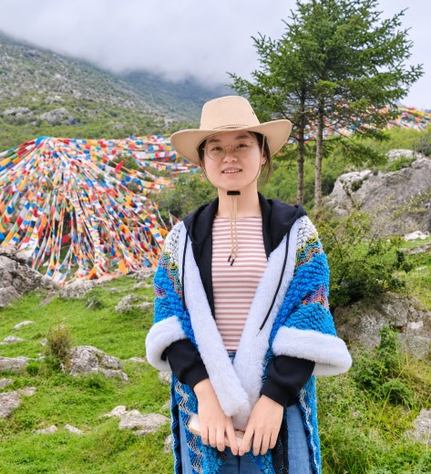
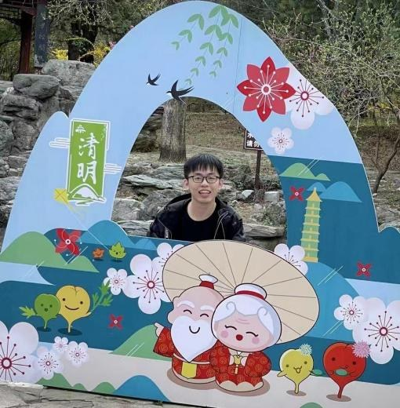
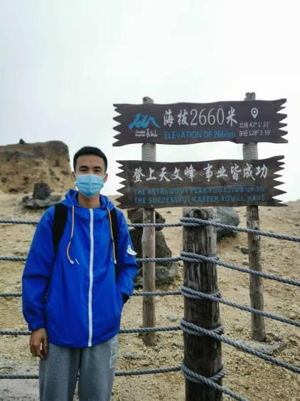
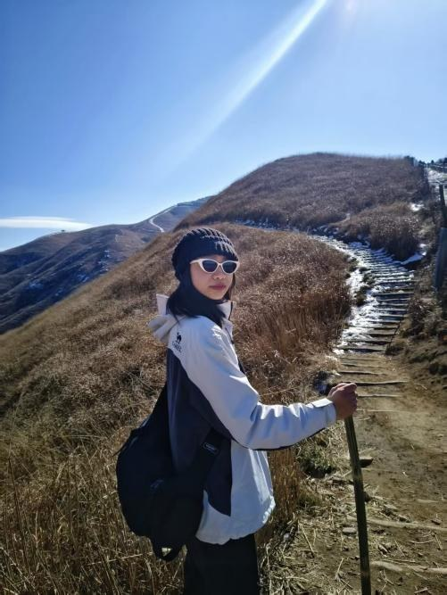
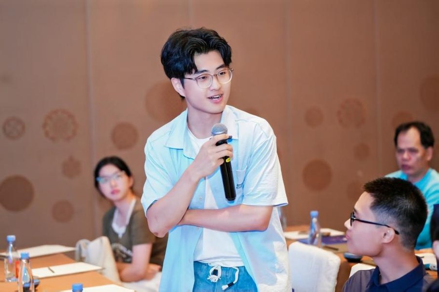

Yiming Zhu
Postdoctoral Fellow
Yiming Zhu is a postdoctoral fellow in the Xu Lab. She is from Shandong, China, and holds a bachelor's degree from Jiangnan University, a master's degree from the National University of Singapore and a PhD from Sun Yat-sen University. Her research focuses on the mechanisms that keep long-lived plasma cells alive and resident in the bone marrow. Outside the lab, she enjoys seeking out new restaurants and cafés.

Chumei Zeng
Postdoctoral Fellow
Chumei Zeng is a postdoctoral fellow in the Xu Lab. She is from Nanning, Guangxi, China, and holds bachelor's and master's degrees in Clinical Medicine from Guangxi Medical University and a PhD in Obstetrics and Gynecology from the First Affiliated Hospital of Sun Yat-sen University. Her research focuses on pregnancy immunology. Outside the lab, she enjoys road cycling, tennis, surfing and hiking.

Hui Xu
PhD Candidate
Hui Xu is a PhD candidate in Biology and Medicine at the Zhongshan School of Medicine, Sun Yat-sen University. She is from Wuwei, Gansu Province, China, and holds a bachelor's degree from Xinjiang Medical University and a master's degree from Southern Medical University. Her research focuses on mucosal immunology, in particular how intestinal IgA plasma cells are maintained and regulated through their interactions with the local tissue microenvironment. Outside the lab, she enjoys yoga, Pilates and traveling.
Yunqi Hu
PhD Candidate
Yunqi Hu is a PhD candidate at the Zhongshan School of Medicine, Sun Yat-sen University. She is from Xining, Qinghai Province, China, and earned her bachelor's degree from Ocean University of China before completing her master's degree and beginning her doctoral studies at Sun Yat-sen University. Her research focuses on intestinal mucosal immunity. Outside the lab, she enjoys watching TV series, doing handicrafts and singing.

Jian Guo
PhD Candidate
Jian Guo is a PhD candidate at the Zhongshan School of Medicine, Sun Yat-sen University. He is from Ganzhou, Jiangxi Province, China, and earned his bachelor's degree from the School of Life Sciences at Beijing Normal University before moving to Sun Yat-sen University for his doctoral studies. His research focuses on aging and adaptive immunity. Outside the lab, he enjoys playing and watching football.
Haimei Lv
PhD Candidate
Haimei Lv is a PhD candidate in Basic Medical Sciences at Sun Yat-sen University. She is from Guangdong, China, and studied biotechnology as an undergraduate at Southern Medical University before earning her master's degree in Basic Medical Sciences at Sun Yat-sen University. Her research examines how systemic signals regulate plasma cells in the bone marrow. Outside the lab, she enjoys listening to music, watching movies and hiking.

Jun Chen
PhD Candidate
Jun Chen is a PhD candidate in the Xu Lab. He is from the Guangxi Zhuang Autonomous Region, China, and earned his bachelor's degree from Heilongjiang University and his master's degree from Shandong University. His research focuses on long-lived plasma cells and humoral immunity. Outside the lab, he enjoys good food, anime and movies.
Yutong Xue
PhD Candidate
Yutong Xue is a PhD candidate at the Zhongshan School of Medicine, Sun Yat-sen University. She is from Xi'an, Shaanxi Province, China, and earned her master's degree in Internal Medicine (Hematology) from Nanfang Hospital, Southern Medical University, where she developed a strong interest in immunology and disease-related research. Her research focuses on humoral immunity, particularly the mechanisms that regulate it. Outside the lab, she enjoys traveling, listening to music and photography.
Juan Xu
PhD Candidate
Juan Xu is a student in the combined master's–doctoral program at the Zhongshan School of Medicine, Sun Yat-sen University. She is from Hengyang, Hunan Province, China, and holds a bachelor's degree in Life Sciences from Hunan Normal University. Her research focuses on mucosal immunity in the mammary gland. Outside the lab, she enjoys shopping, hiking, cooking and watching short videos.
Mengna Zhang
PhD Candidate
Mengna Zhang is a PhD candidate in Stem Cell and Regenerative Medicine at Sun Yat-sen University. She is from Bozhou, Anhui, China, and earned a bachelor's degree from Anhui Normal University and a master's degree from Hangzhou Normal University. Her research interests lie in immunology. Outside the lab, she enjoys cycling.
Jiamei Chen
Master's Student
Jiamei Chen is a master's student at the Zhongshan School of Medicine, Sun Yat-sen University. She is from Wuzhou, Guangxi, China, and earned her bachelor's degree in Biological Sciences from Yunnan University. Her research focuses on the bone marrow microenvironment and humoral immunity. Outside the lab, she enjoys city walks, exploring local food and watching movies.

Shuangshuang Liu
Master's Student
Shuangshuang Liu is a master's student at the Zhongshan School of Medicine, Sun Yat-sen University. She is from Nanchang, Jiangxi, China, and earned her bachelor's degree in Biotechnology from Jiangxi Agricultural University. Her research focuses on mesenchymal stem cell (MSC) subpopulations and their role in shaping the immune microenvironment. Outside the lab, she is passionate about sports, photography and dancing.

Rui Ma
Master's Student
Rui Ma is a master's student in the Xu Lab and a native of Guangzhou, Guangdong, China. She completed her undergraduate studies at Xiamen University. Her research focuses on how stress regulates humoral immunity. Outside the lab, she enjoys playing badminton, working out and listening to R&B and rap music.
Duoduo Yun
Master's Student
Duoduo Yun is a master's student in the Xu Lab. She is from Zhengzhou, Henan Province, China, and earned her degree in Biotechnology from Southern Medical University, where she carried out her thesis research in the lab. Her research focuses on the factors that determine how long the humoral immune response persists. Outside the lab, she enjoys dancing, outdoor sports and listening to music.